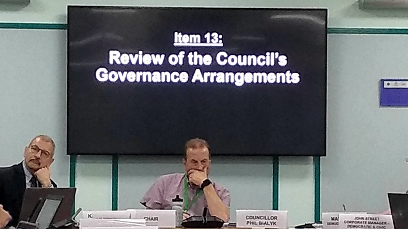

Exeter City Council’s executive, the group of leading councillors who run the authority’s business, have agreed a package of changes to the current scrutiny arrangements set out in the council’s constitution.
Taken together the changes weaken everyone’s capacity for challenging the executive. They will go for approval to a meeting of the full council next Tuesday 15 October.
Scrutiny committees were introduced as part of legislative reforms to local government which allowed councils to replace the old system of decision-making by committees with “executive arrangements”. First introduced in 2000, the legislative basis is now in a schedule to the Localism Act 2011.
Most councils have since set up executives or cabinets which effectively run the council’s business, with some decisions reserved for approval by the full council.
To counterbalance this centralisation of control, councils are required to establish at least one scrutiny committee of councillors who are not part of the executive to scrutinise the actions of the executive.
An alternative interpretation is that scrutiny committees exist simply to give non-executive councillors something to do.
The key changes now proposed in Exeter relate to the composition and functions of scrutiny committees and to public participation at council committee meetings.
They will also mean the leaders of opposition political groups are no longer entitled to a seat on the executive.
Changes of particular interest to people concerned with openness and accountability follow.

Changes to scrutiny committees
The current three committees will be reduced to two, one covering “strategic” issues and the other addressing “customer focus”. The allocation of individual services and policies to the committees is not yet fully clear.
There is no specific remit in the new committees’ terms of reference to hold the executive to account, though doing so is not a marked characteristic of the current committees.
The practice of scrutiny committees commenting on officer proposals before they are considered by the executive will cease. This means that councillors on the executive will take decisions based solely on advice from the council’s officers, without any formal input from non-executive councillors in advance.
It also reduces the time available for public scrutiny of proposals because papers will only be published by the council a week before each executive meeting. At present, scrutiny papers are published a week before scrutiny committee meetings, and so are available a fortnight or so before the executive meetings at which decisions are taken.
Both chair and deputy chair of all three scrutiny committees are currently selected from the ruling political group. In future deputy chairs will be elected from opposition parties. While their election at full council gives the ruling political group an effective veto over their appointment, it is not clear whether the ruling group would choose to wield this power.
A new Scrutiny Programme Board will supervise the work of the scrutiny committees and set their priorities. The chairs and deputy chairs of the scrutiny committees will be members of the board, and its chair will be nominated by the leader of the council.
As a board rather than a statutory committee, it is likely that it will meet in private session.
Public participation at council meetings
Members of the public can currently only ask questions at scrutiny committee meetings. In future such questions will be allowed at full council meetings and, provided they relate to agenda items, at executive meetings. However, the same question will not be permitted at more than one meeting.
The changes place other new restrictions on questions. No more than fifteen minutes will be allowed at each meeting for public questions. This is in line with East Devon and Teignbridge district councils, though Mid Devon and Devon County Council allow 30 minutes.
This limit may unreasonably restrict public participation where a single issue of major public concern dominates the agenda. It will also limit questions at meetings with full agendas. The next full council meeting agenda contains seventeen items of business: the new rules would allow less than a minute of questions (and answers) for each.
Questions will also have to observe a 50-word limit. This arguably favours those with a stronger command of English because of the challenge of framing a question precisely enough to avoid an evasive answer.
Questioners will in future be restricted to one question per meeting. They will be able to ask one supplementary question, though the current right to make a two minute statement to the committee appears to have been dropped, and the supplementary question must be based on the response to the original question.
Council leader Phil Bialyk commended the changes, saying the current arrangements dated from a time when the balance of power was more evenly distributed between parties, and that now Labour held 29 of 39 seats the situation had changed.
Neither of the opposition members of the executive, Andrew Leadbetter (Conservative) or Kevin Mitchell (Liberal Democrat), was present but Councillor Bialyk assured the meeting that both were “supportive” of the proposals.
In response to a comment from Green Party councillor Diana Moore, Councillor Bialyk gave an assurance that no one would be disadvantaged by the 50-word question limit, saying that the council secretariat would assist people who were having difficulty complying.
Exeter residents with views on the proposed changes can send them to their ward councillors before the full council meeting on 15 October.
Should the changes be approved at that meeting, they will take effect immediately.
Contact information for councillors is available on the city council website.